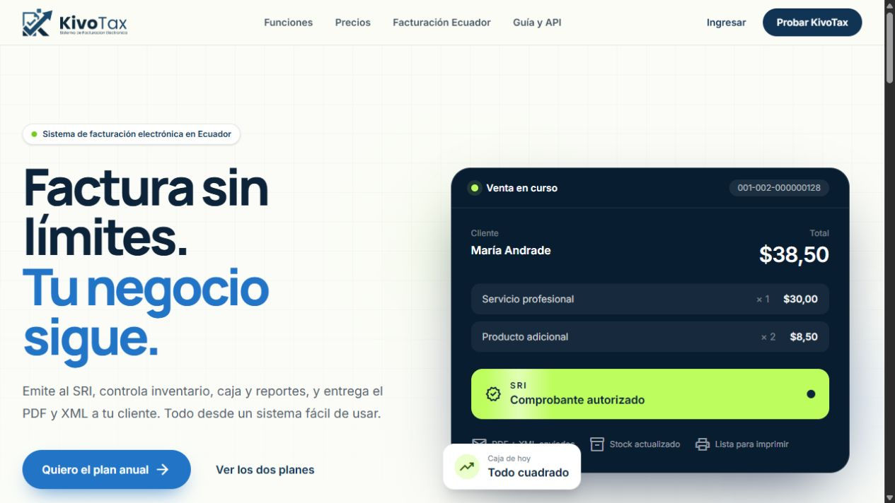
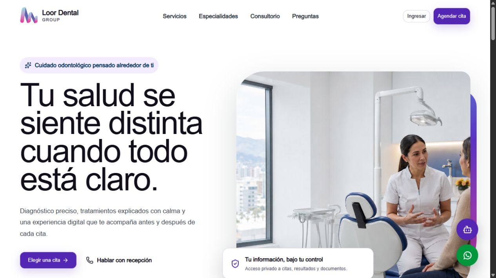
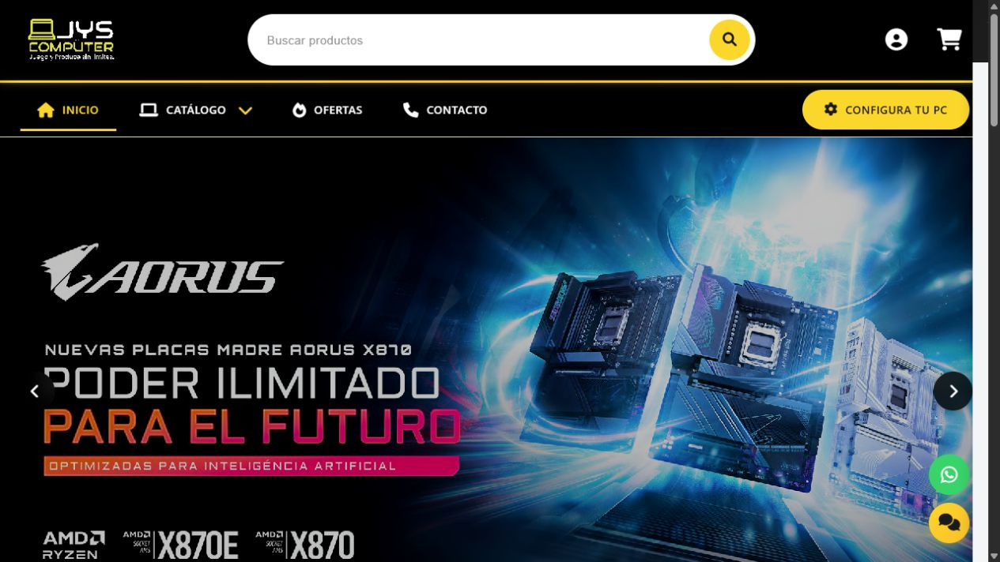
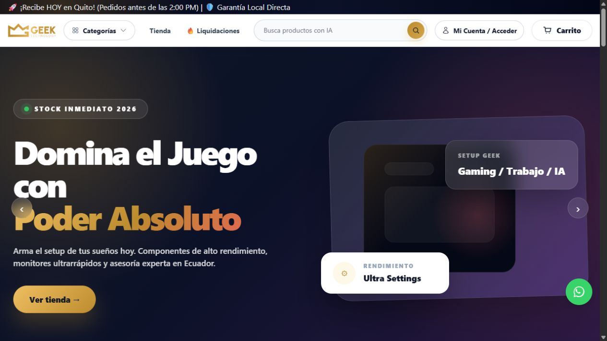
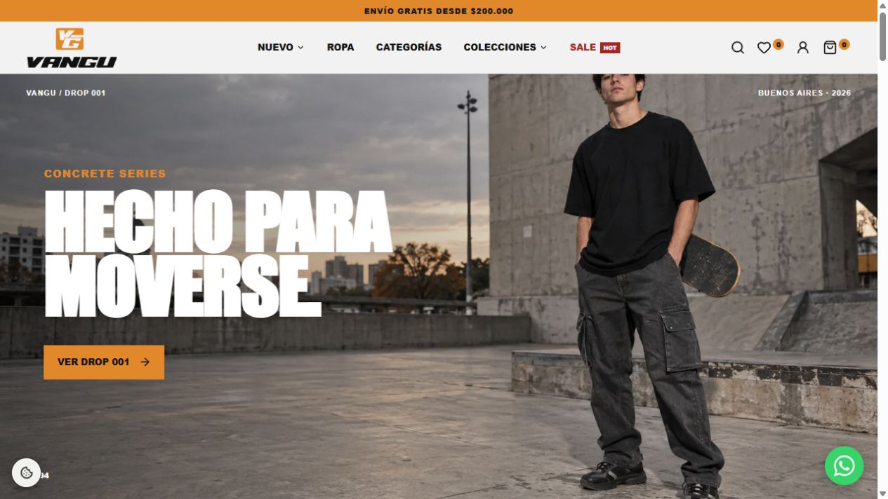
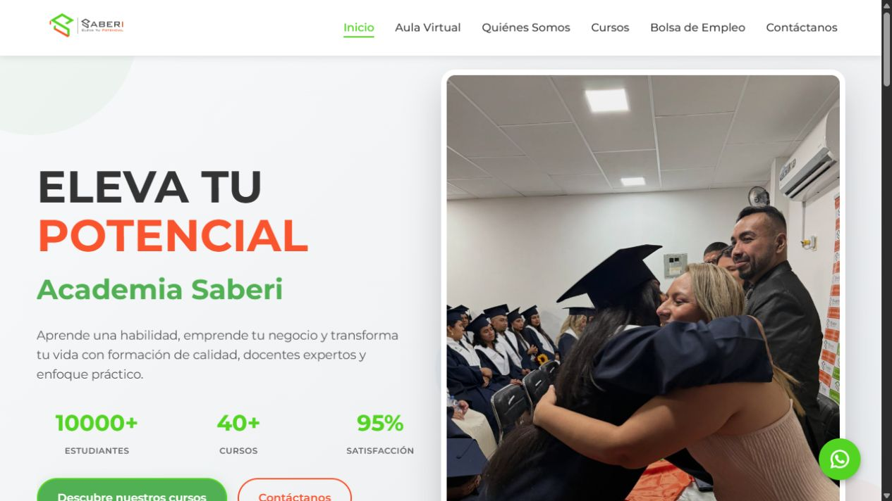
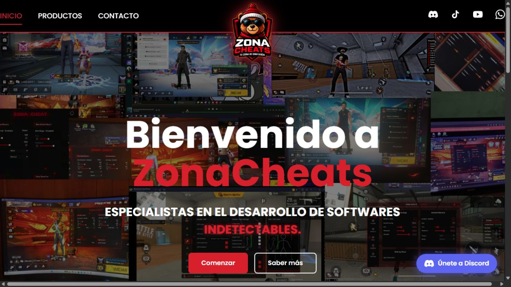

Páginas web y e-commerce
Landing pages, sitios corporativos y tiendas online rápidas, responsive y preparadas para convertir visitas en oportunidades.
Creamos páginas web, sistemas, automatizaciones, integraciones de IA y chatbots que ayudan a vender, reducir trabajo manual y atender mejor a tus clientes.
Guayaquil, Ecuador · Atención directa por WhatsApp

KivoTax Sistema odontológico
Loor Dental GroupWeb · E-commerce · Automatización · IA · Chatbots
Trabajo real para negocios de
Digitalizamos la presencia, la atención y los procesos de tu negocio. Diseñamos la solución, conectamos las herramientas y automatizamos el trabajo repetitivo.

Mensajes, documentos, datos y acciones trabajando juntos.
Landing pages, sitios corporativos y tiendas online rápidas, responsive y preparadas para convertir visitas en oportunidades.
Convertimos tareas manuales en flujos confiables: validaciones, consultas, carga de información, reportes y operaciones entre plataformas.
Integramos IA para clasificar información, responder consultas, asistir equipos y acelerar procesos reales del negocio.
Bots para páginas web, WhatsApp, Facebook y Telegram que atienden, filtran solicitudes y conectan cada conversación con tu operación.
Conectamos sistemas, servicios externos, bases de datos y canales de comunicación para evitar información aislada.
Experiencia aplicada: automatización de procesos para IMPI Argentina, atención por WhatsApp y Facebook, bots de Telegram e integraciones personalizadas.
Quiero automatizar mi negocioDel primer mensaje al lanzamiento
Te mantenemos al tanto de las decisiones, avances y siguientes pasos. Cada proyecto se adapta a su alcance, pero la ruta siempre es comprensible.
Empezar una conversaciónConversamos sobre el problema, los usuarios y lo que necesita lograr la solución.
Organizamos alcance, prioridades, experiencia y una propuesta clara antes de construir.
Avanzamos por etapas revisables para que puedas acompañar las decisiones importantes.
Publicamos, verificamos el funcionamiento y dejamos una base preparada para crecer.
Diseñamos y desarrollamos experiencias que convierten procesos complejos en soluciones claras, rápidas y fáciles de usar.
Una experiencia de facturación que reúne documentos electrónicos, inventario, caja y reportes en un flujo claro para negocios ecuatorianos.
Una plataforma odontológica que comunica confianza y coordina servicios, agenda e información del paciente en una sola experiencia.
E-commerce, educación, gaming y experiencias digitales creadas para marcas en crecimiento.

ExplorarCatálogo, ofertas y configuración personalizada de computadoras.

ExplorarComputadoras, componentes gamer y accesorios de alto rendimiento.

ExplorarStreetwear argentino, lanzamientos limitados y una identidad visual urbana.

ExplorarCursos prácticos, aula virtual y formación orientada al emprendimiento.

ExplorarUna experiencia visual de alto contraste para presentar productos digitales y conectar una comunidad gamer.

Somos un equipo ecuatoriano de desarrollo, automatización e inteligencia artificial. Convertimos necesidades comerciales en herramientas claras, conectadas y preparadas para el uso diario.
Trabajamos con comunicación directa y decisiones visibles, desde la primera conversación hasta la publicación del producto.
Tu proyecto puede ser el siguiente
Cuéntanos qué necesitas. Revisamos la idea contigo y te orientamos sobre el siguiente paso.
Conversar por WhatsApp